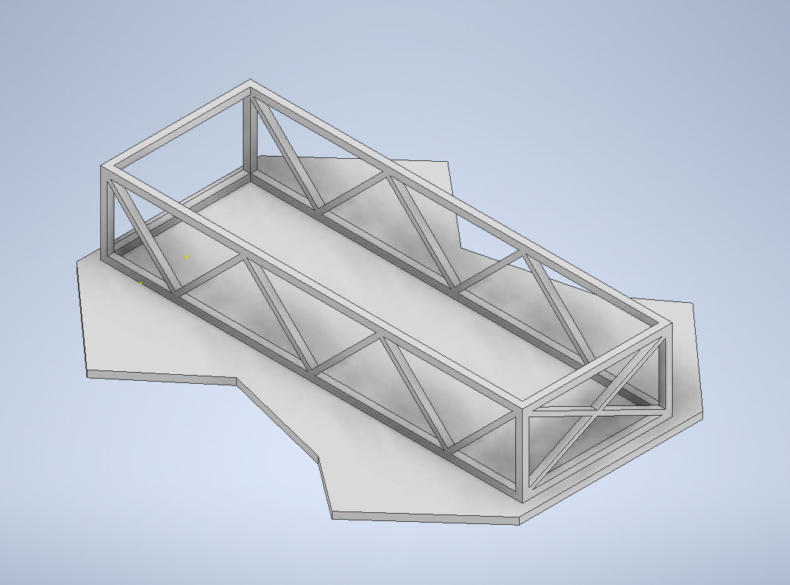

This page talks about some of the fun projects I have done and can give you an insight into the projects that I think make me industry ready and all the distinct subjects I have studied.
Research Paper
Dowload Research PaperEnigma
I was inspired to build this project when I was working on another project named BlockLite, which you will read about later on this page. Studying the SHA-256 hashing algorithm planted this idea in my head about an encrypter and decrypter program. I wanted to achieve a similar level of complexity as the SHA-256 algorithm, and I believe that I was successful in accomplishing that. The encrypter program accepts an alphanumeric string as a parameter and returns an encrypted alphanumeric string. The encrypter uses a different encryption key and a different encryption technique every time it runs. The encryption key and encryption technique are chosen using two random variables, which makes it even more ambiguous. This means, even if you keep passing the same input string the output is going to be different each time. The decrypter program accepts just the encrypted string as a parameter and returns the initial or non-encrypted string. This was a very difficult but fun project and most importantly a serious learning experience.
Top-Ten
Top Ten is meant to be an engaging Android polling app in which users can vote on a list of items, ultimately forming a “definitive” top ten ranking for the items. Users can rank their favorite fast-food restaurants, movies, albums, and much more. Every week new lists are released and the users can poll on their favorite list items. Before voting the users can make a guess on a list item that they think might come on top and at the end of the week if the prediction is correct the users will be awarded points for their guess. This is an app that I worked on with a SCRUM team over a ten-week period. I worked as an integration specialist responsible for backend programming, unit testing, and handling the firebase firestore database. This was my first project in android studio and working with Kotlin. This project gave me the required knowledge and confidence to work on several individual projects using Kotlin. Every team member worked on this project remotely, which was a unique experience because it helped me realize the importance of team-communication and also obtain some experience with version control systems.
BlockLite
In 2020, my friends and I participated in a hackathon organized at the University. For this event, we decided to study Bitcoin and how it functions. We decided to replicate the blockchain system but make it simpler and more adaptable so that it can be used in more applications than just cryptocurrency. Although we didn't manage to finish studying and writing the code, I wasn't going to give up. I managed to study and code for a few hours during the weekends to finish the most basic blockchain system from scratch. I call it the blockLite. Unlike the real blockchain implemented by multiple cryptocurrencies these days which use custom extensions to save the blocks, this program saves the individual blocks as text files, until a miner hashes the text file and a new block is created. It uses the SHA-256 hashing which is also used by bitcoin for hashing the blocks. The blockLite stores random information along with the date and time of the data creation. This program runs and saves data locally compared to other decentralized ledgers, hence the name blockLite. I enjoyed every bit of struggle and challenges I faced along the way to make this work and even if I didn't hit the bullseye, I believe I still scored enough to be proud of what I ended up with.
Quadcopter
This was one of my first hands-on, practical team project I did back in my home country. It was a really interesting project we built from scratch, from the code to the chassis. We decided to make it a wifi controlled quadcopter which uses IoT to interact with your smartphone. The fundamental components we used for the projects were an Arduino Nano which we replaced with an Arduino Uno, an esp-8266 for wifi communication and a mpu-6050 which is a 6 direction gyroscope and accelerometer. It was a really fun project and me and my teammates had so much fun doing it that we decided to do it once again when we came to Cincinnati for our undergraduate studies. This time we decided to 3-D print the body of the drone which we designed using Autodesk inventor and for the parts, we used raspberry-pi zero and a mpu-9250 which is a 9 direction gyroscope and accelerometer. I know it sounds like a very cliche engineering project but we were a bunch of middle-schoolers googling our way through everything, trying to learn IoT and physics behind how a quadcopter works and at the end of the day, I think that the most valuable and essential thing to get out of a project is the leaning experience.

Websites
I started studying web development in 7th grade in middle school. I was very interested when I started writing HTML code that I started studying more than there was in the curriculum. In high school, I was so intrigued by web development. I started with writing basic HTML code and then learning CSS after a year and then also learned to integrate SVG animations. Apple has always been an inspiration for me because being a trillion-dollar company, with every product launch, the company manages to come up with the most minimalistic yet the most interesting web designs which stand out from every other brand in the market. I have also been studying web development at my university along with taking online courses on the internet. In 2019, I created a website for a client along with my friend who did the backend. It was a very amusing project which inspired me to dive deeper into web dev and even spur me to make this website.
Hangman
I started this project when I was in 10th grade and it took me a year and an uncountable number of attempts to complete it. I even switched languages from C++ to Python which is more flexible but in the end, I ended up switching to my initial code in C++ and committing to it till the end. It was my first ever project using Object Oriented Programming. To complete this project I watched a couple of of videos on YouTube and even purchased online courses on Udemy. I was purposely taking baby steps so that I don't just complete the project for the sake of it but also learn something valuable.